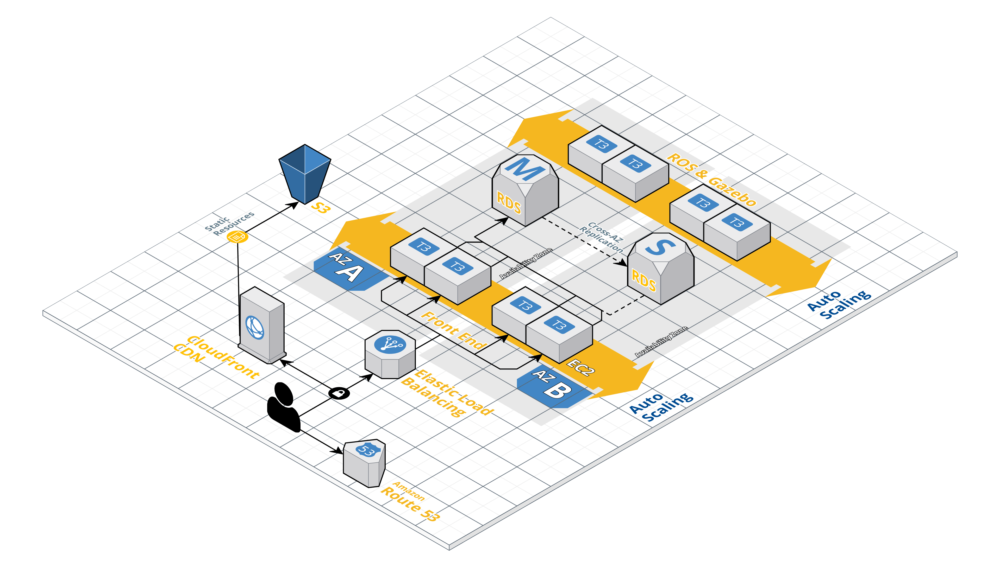

<!-- BEGIN: Page content -->
<section>
		<div class="view gallery-page">
			<div class="content">
				<div class="view-wrapper">
					<div class="view">
						<div class="item-content">
							<div class="container">
								<h3>NTU <span class="highlight">Technologia</span></h3>
								<div class="row">
									<div class="col-md-9">
										
									</div>
									<div class="col-md-3">
										<h4>Descrição do Projeto</h4>
										<p>Nno cenário da robótica, “ntu” pode ser entendido como “a existência através de sua manifestação”, este é o foco da NTU Software Technology: criamos a parte essencial dos robôs para que possam ter significado em sua existência.<br>Em 2020, a NTU deverá consolidar sua base de usuários para disponibilizar os primeiros serviços SaaS e RaaS (Robot as a 
										<p><span class="field">Cliente:</span> NTU Technologia</p>
										<p><span class="field">Data:</span> 2018</p>
										<p><span class="field">Tags:</span> Consultoria, Infraestrutura como código, Automação</p>
									</div>
								</div>
							</div>
						</div>
					</div>
				</div>
			</div>
		</div>
	</section>